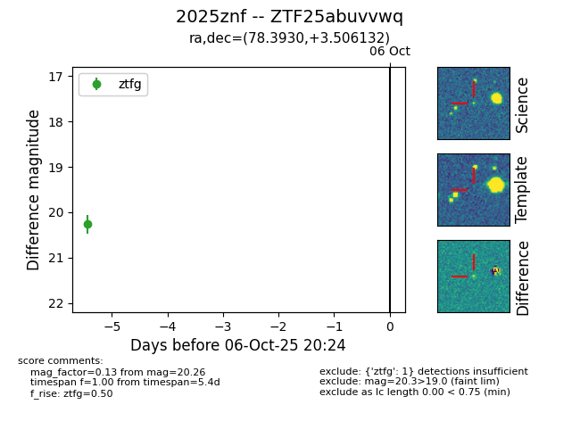

FINK: ZTF25abuvvwq
Lasair: ZTF25abuvvwq
ALeRCE: ZTF25abuvvwq
TNS: 2025znf
YSE: 2025znf
ZTF25abuvvwq (ztf,fink)
2025znf (tns,yse)
equatorial (ra, dec) = (78.3930,+3.50613)
galactic (l, b) = (197.9618,-19.87820)

last ztfg=20.26
1 ztfg detections